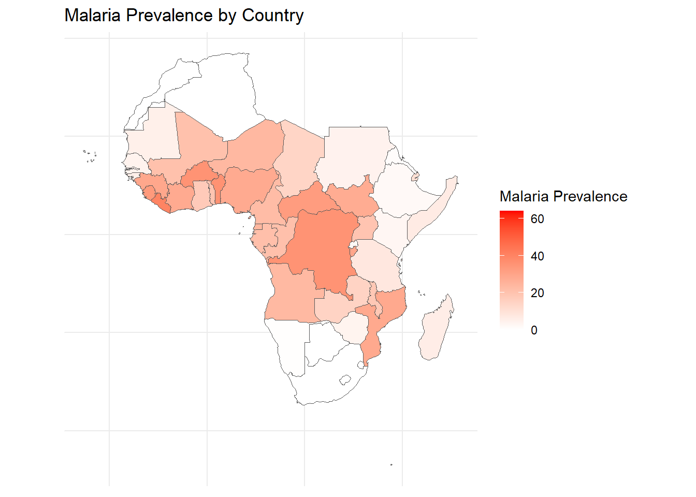

In this assignment, we’ll consider some of the tools and techniques for visualizing spatial data. Spatial data comes in two broad categories, geographic and spatial fields. Let’s practice a few visualizations to get a feel for how these things work!
GEOGRAPHIC MAPS!
In class I bet Ronald that he would end up creating some kind of map based visualization before he graduated with his PHD. This is because he works on Malaria - a terrible disease with a strong spatial component to its risk levels. Let’s get some Malaria data and map it!
The data I obtained were from the Malaria Atlas. I downloaded a csv for 10 years of data for all the countries the had on file.
Code
library(tidyverse)
Warning: package 'ggplot2' was built under R version 4.3.3
Warning: package 'lubridate' was built under R version 4.3.3
── Attaching core tidyverse packages ──────────────────────── tidyverse 2.0.0 ──
✔ dplyr 1.1.4 ✔ readr 2.1.5
✔ forcats 1.0.0 ✔ stringr 1.5.1
✔ ggplot2 3.5.0 ✔ tibble 3.2.1
✔ lubridate 1.9.3 ✔ tidyr 1.3.0
✔ purrr 1.0.2
── Conflicts ────────────────────────────────────────── tidyverse_conflicts() ──
✖ dplyr::filter() masks stats::filter()
✖ dplyr::lag() masks stats::lag()
ℹ Use the conflicted package (<http://conflicted.r-lib.org/>) to force all conflicts to become errors
Code
library(readxl)library(rnaturalearth)
Warning: package 'rnaturalearth' was built under R version 4.3.3
Code
library(rnaturalearthdata)
Warning: package 'rnaturalearthdata' was built under R version 4.3.3
Attaching package: 'rnaturalearthdata'
The following object is masked from 'package:rnaturalearth':
countries110
Warning: package 'gifski' was built under R version 4.3.3
Code
# ggplot() +geom_sf(data = map_data%>%filter(continent=="Africa"),aes(fill = Prevalence)) +scale_fill_gradient(low ="white", high ="red", na.value ="gray", name ="Malaria Prevalence") +theme_minimal() +theme(axis.text =element_blank(), axis.ticks =element_blank(), axis.title =element_blank()) +labs(title ="Malaria Prevalence by Country")

Oh SNAP! We made a MAP!
Hey! That rhymes!
What is missing? Units? Is that actually prevalence? We sure left a lot of data on the table? Can we add some kind of time thing? Change the variable?
SPATIAL FIELDS
Spatial field data refers to data that has a continuous spatial distribution and can be measured at any location within the defined area. Here are some interesting examples of spatial field data:
Air temperature: Air temperature data collected from weather stations or remote sensing technologies can be used to create temperature maps or to study climate change, urban heat islands, and other environmental phenomena. TROPICAL CYCLONE!
Precipitation: Rainfall, snowfall, or other forms of precipitation data collected from weather stations or satellites can be used to study the hydrological cycle, flood risk, droughts, or water resource management.
Soil moisture: Soil moisture data collected from in situ sensors or remote sensing technologies can be used to study agricultural productivity, irrigation management, droughts, and land degradation. Elevation data (Digital Elevation Models, DEMs):
Elevation data collected from satellite-based radar, LiDAR, or photogrammetry can be used to study topography, watershed delineation, flood risk, landslides, or geomorphology.
Vegetation indices: Indices like the Normalized Difference Vegetation Index (NDVI) or Enhanced Vegetation Index (EVI) derived from satellite imagery can be used to study vegetation health, land cover change, deforestation, agricultural productivity, and carbon sequestration.
Air quality: Data on air pollutants like PM2.5, PM10, NO2, SO2, O3, and CO collected from ground-based monitors or satellites can be used to study the impact of pollution on human health, urban planning, or environmental policy.
Oceanographic data: Sea surface temperature, salinity, and chlorophyll-a concentration data collected from buoys, ships, or satellites can be used to study ocean currents, climate change, or marine ecosystems. OCEAN CURRENTS!
Population density: Spatially explicit population density data can be used to study urbanization, migration patterns, infrastructure planning, or public health.
Land use and land cover: Land use and land cover data collected from satellite imagery can be used to study urban growth, deforestation, habitat fragmentation, or landscape ecology.
Seismic activity: Spatial distribution of earthquakes and their magnitudes can be used to study tectonics, fault zones, seismic hazards, or infrastructure resilience. DARK NIGHTS IN ANTAKYA
SPORTS! Let’s check out a baseball example!
Code
#install.packages("baseballr")library(remotes)
Warning: package 'remotes' was built under R version 4.3.3
Code
library(devtools)
Warning: package 'devtools' was built under R version 4.3.3
Loading required package: usethis
Attaching package: 'usethis'
The following object is masked from 'package:remotes':
git_credentials
Attaching package: 'devtools'
The following objects are masked from 'package:remotes':
dev_package_deps, install_bioc, install_bitbucket, install_cran,
install_deps, install_dev, install_git, install_github,
install_gitlab, install_local, install_svn, install_url,
install_version, update_packages
Code
#install_github("bayesball/CalledStrike")
Code
library(baseballr)
Warning: package 'baseballr' was built under R version 4.3.3
Code
#ShinyDemo()
Source Code
---title: "Practice with Spatial Data"subtitle: "Malaria, Ocean Currents, Baseball..."format: html: toc: false echo: trueauthor: "Barrie Robison"date: "2024-04-18"categories: [Portfolio, DataViz, Spatial, GGPlot, Assignment]image: "Rlyeh.png"description: "Maps and Spatial Fields are fun!"code-fold: truecode-tools: true---## OVERVIEWIn this assignment, we'll consider some of the tools and techniques for visualizing spatial data. Spatial data comes in two broad categories, geographic and spatial fields. Let's practice a few visualizations to get a feel for how these things work!## GEOGRAPHIC MAPS!In class I bet Ronald that he would end up creating some kind of map based visualization before he graduated with his PHD. This is because he works on Malaria - a terrible disease with a strong spatial component to its risk levels. Let's get some Malaria data and map it!The data I obtained were from the [Malaria Atlas](https://data.malariaatlas.org/trends?year=2020&metricGroup=Malaria&geographicLevel=admin0&metricSubcategory=Pf&metricType=rate&metricName=incidence). I downloaded a csv for 10 years of data for all the countries the had on file.```{r}library(tidyverse)library(readxl)library(rnaturalearth)library(rnaturalearthdata)library(dplyr)Malaria <-read.csv("National_Unit_data.csv")Incidence<- Malaria%>%filter(Metric =="Infection Prevalence")%>%mutate(Prevalence = Value, Year =as.factor(Year))#%>%#select(c(ISO3, Prevalence, Year))```Now I'm going to use the `rnaturalearth` package to create contry polygons. Then I'll add the Malaria data to that data frame.```{r}world_map <-ne_countries(scale ="medium", returnclass ="sf")map_data <- world_map %>%left_join(Incidence, by =c("iso_a3"="ISO3"))%>%filter(!is.na(Prevalence))```Now I will make a plot!```{r}library(gganimate)library(transformr)library(magick)library(gifski)# ggplot() +geom_sf(data = map_data%>%filter(continent=="Africa"),aes(fill = Prevalence)) +scale_fill_gradient(low ="white", high ="red", na.value ="gray", name ="Malaria Prevalence") +theme_minimal() +theme(axis.text =element_blank(), axis.ticks =element_blank(), axis.title =element_blank()) +labs(title ="Malaria Prevalence by Country")```Oh SNAP! We made a MAP!Hey! That rhymes!What is missing? Units? Is that actually prevalence? We sure left a lot of data on the table? Can we add some kind of time thing? Change the variable?## SPATIAL FIELDSSpatial field data refers to data that has a continuous spatial distribution and can be measured at any location within the defined area. Here are some interesting examples of spatial field data:1. Air temperature: Air temperature data collected from weather stations or remote sensing technologies can be used to create temperature maps or to study climate change, urban heat islands, and other environmental phenomena. [TROPICAL CYCLONE!](https://svs.gsfc.nasa.gov/14312)2. Precipitation: Rainfall, snowfall, or other forms of precipitation data collected from weather stations or satellites can be used to study the hydrological cycle, flood risk, droughts, or water resource management.3. Soil moisture: Soil moisture data collected from in situ sensors or remote sensing technologies can be used to study agricultural productivity, irrigation management, droughts, and land degradation. Elevation data (Digital Elevation Models, DEMs):4. Elevation data collected from satellite-based radar, LiDAR, or photogrammetry can be used to study topography, watershed delineation, flood risk, landslides, or geomorphology.5. Vegetation indices: Indices like the Normalized Difference Vegetation Index (NDVI) or Enhanced Vegetation Index (EVI) derived from satellite imagery can be used to study vegetation health, land cover change, deforestation, agricultural productivity, and carbon sequestration.6. Air quality: Data on air pollutants like PM2.5, PM10, NO2, SO2, O3, and CO collected from ground-based monitors or satellites can be used to study the impact of pollution on human health, urban planning, or environmental policy.7. Oceanographic data: Sea surface temperature, salinity, and chlorophyll-a concentration data collected from buoys, ships, or satellites can be used to study ocean currents, climate change, or marine ecosystems. [OCEAN CURRENTS!](https://earth.nullschool.net/#current/ocean/surface/currents/orthographic=-177.96,0.40,1571)8. Population density: Spatially explicit population density data can be used to study urbanization, migration patterns, infrastructure planning, or public health.9. Land use and land cover: Land use and land cover data collected from satellite imagery can be used to study urban growth, deforestation, habitat fragmentation, or landscape ecology.10. Seismic activity: Spatial distribution of earthquakes and their magnitudes can be used to study tectonics, fault zones, seismic hazards, or infrastructure resilience. [DARK NIGHTS IN ANTAKYA](https://svs.gsfc.nasa.gov/31224)11. SPORTS! Let's check out a baseball example!```{r}#install.packages("baseballr")library(remotes)library(devtools)#install_github("bayesball/CalledStrike")``````{r}library(baseballr)#ShinyDemo()```